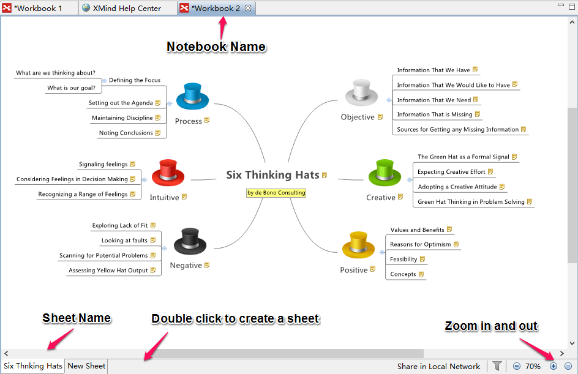

ワークブックと複数シート
すべての XMind ファイルはブックです。1 つのブックはそれぞれ独立した複数のマインドマップのシートを保持することができます。シートの作成や変更はとても簡単です。
新しいシートの作成 :
- ショートカットキーの "Ctrl + T"を使用します。
- エディター画面下部の、シート名の横にある空白領域をダブルクリックします。
- ツールバーの'シート' アイコンをクリックします。

シートの変更 :
- エディター画面下部にあるシート名を右クリックします。
- コンテキストメニューから、次の変更を行えます :
- シート名を変更します。
- "シートを名前付けて保存..." で、現在選択されているシートを別のブックとして保存することができます。
- 現在のシートをブックから削除します。
- 他のシートを削除します。
- プロパティは、プロパティビューを開きます。

注: ブック内のマップはお互い独立しています。そのマップは異なる構造、壁紙、テーマを設定することができます。